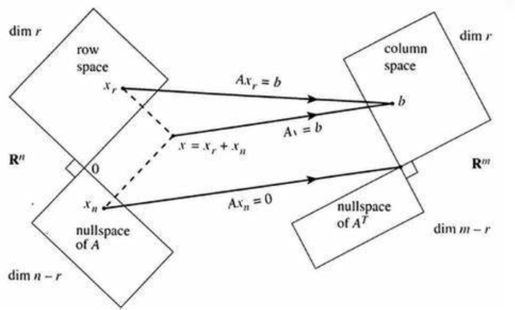

如果本科线代能有这样的教育方式和路线，我何苦现在还要来听这门公开课(
记录一下听的过程中觉得有用的信息好了。
从线性方程组开始
教授（下简称 GS）认为线性代数的基本用途是解线性方程组，比如有这样一个方程组：
⎩⎨⎧2x−y=0−x+2y=3
我们可以从以下三个角度考虑其解法。
-
行图像：对于每个方程，我们都可以在二维平面上画出一条直线，这些直线的交点就是我们想要的解；
-
列图像：对于每个变量的参数，我们都可以把方程组写成若干向量线性组合的形式（本例中是 x[2−1]+y[−12]=[03]）。只要找到一个合适的组合，方程组得解；
此处如果如果每次取任意的 x 与 y，则等式左侧的向量的组合能布满整个二维平面。
拓展到多元方程组也是同理。
我们构造一个系数矩阵 A=[2−1−12]，令 x=[xy],b=[03]，然后方程组可以写成这样子：
Ax=b
是否有解？
这时要考虑一个问题：是否任意 b 都能让上面那个方程有解呢？
从行图像的角度来讲，如果方程组有解，则所有方程在坐标系上对应的图像（直线、平面、体积）存在交集。如果某一个 b 不能满足上面条件，则无解（反之有解）。
从列图像的角度来讲，如果某一个 b 不能成为 A 列向量的线性组合，则无解（反之有解）。
如何求解？
计算机软件（以及人类）计算时最常用的方法是高斯消元法，将原方程 Ax=b 转换为新的方程 Ux=c。
其中 U 为行阶梯最简型矩阵。
消元过程
每一步消元都可以视为将原矩阵乘上一个置换矩阵。左乘置换矩阵可以完成原矩阵的行变换，右乘置换矩阵则为列变换。
逆矩阵
对于消元过程，每一步都是可逆的。对于一个置换矩阵 E1，我做了其相反的操作即可得到原矩阵，若这一相反的操作用 E1′ 表示，则有 E1′E1A=A 。
得到 E1′E1=I，从而可以用 E1′=E1−1 表示逆矩阵。第一个式子代表了逆矩阵的定义与性质。同样也有 (E1′)−1=E1 且 E1E1′=I 。
其中 I 是单位矩阵（对角线元素全为 1，其它元素全为 0 的方阵）
怎么求逆矩阵？
高斯-若尔当消元法(Gauss-Jordan Elimination)告诉我们，通过构造 [ A ∣ I ]，再通过消元法将左侧矩阵变为单位矩阵 I，易得这一系列行变换操作对应的矩阵是 A−1，相当于左乘了一个矩阵 A−1，则右侧矩阵乘完后自然就变为了 A−1。
接下来引入拓展到向量空间
向量空间
一个向量空间应该满足这样一个封闭性条件：对于空间中的任意向量 u,v，其任意线性组合 au+bv(a,b∈R) 必然存在于空间中。显然，所有向量空间必须包括零向量。
子空间
包含于向量空间之内的一个向量空间称为原向量空间的一个子空间。
以 R3 为例（它代表具有三个实数分量的所有向量的集合），其子空间包括：
-
其本身（三维）
-
任一过原点的平面（二维）
-
任一过原点的直线（一维）
-
零向量
列空间
矩阵 Am×n 的所有列向量张成的空间称为其列空间，以 C(A) 表示。C(A)⊂Rm
零空间
所有满足方程 Ax=0 的解的集合称为矩阵 Am×n 的零空间，以 N(A) 表示。N(A)⊂Rn
计算零空间
相当于求方程 Ax=0 的所有解。通过消元法与列交换构造出新的方程 Ux=0，其中 U 是由 r 个主元列与 n−r 个自由列组成的形如下式的行阶梯型矩阵：
U=[Ir×r0Fr×n−r0]
自由列可以表示为其左侧主元列的线性组合。
原方程变为 U 的主元行乘以 x，即 [ I ∣ F ][ xpivot xfree ]=0。如果对 xfree 中 n−r 的变量自由取值，我们能得到 n−r 个线性无关的特解，N(A) 则是由这些特解张成的向量空间（维度为 n−r）。若把这些特解作为列向量写到一个矩阵 N 中，则有 UN=0，易得：
N=[ −Fr×n−r In−r×n−r ]
其中 −F 对应 xpivot，I 对应 xfree
如果方程右侧不为零向量
首先抛出结论：若 b∈C(A)，则方程 Ax=b 有解。
当方程有解时，可以先找到方程一个特解，再与 N(A) 进行线性组合，即可得到最后的解。
秩
矩阵的秩等于矩阵的主元数。若 rank(Am×n)=r，则必有 r≤m,r≤n 。
-
列满秩：即 r=n<m，每一列都是主元列，矩阵没有自由列，N(A) 中只有零向量，方程 Ax=b 要么无解，要么有唯一解。
-
行满秩：即 r=m≤n，方程 Ax=b 有无穷多解。
-
方阵满秩：即 r=m=n，方程 Ax=b 总有唯一解。
-
行列均不满秩：即 r<m,r<n，方程 Ax=b 要么无解，要么有无穷多解。
线性相关性
若一组向量的非零线性组合可以得到零向量，则称这组向量线性相关；反之，则称其线性无关。
基
向量空间的基是一组线性无关的向量，且这些向量能够张成该向量空间。
维数
空间中的每一组基都有相同的向量数，这个数值就是空间的维数，通常用 dim 表示。
基本子空间
除了列空间和零空间，还有
-
行空间：矩阵 Am×n 的所有行向量张成的空间称为其列空间，以 R(A) 表示。R(A)⊂Rn；
-
左零空间：所有满足方程 ATx=0 的解的集合称为矩阵 Am×n 的左零空间，以 L(A) 表示。L(A)⊂Rm；
A 的 r 个主元列构成了 C(A) 的一组基。
Ax=0 的一组特解对应于 A 的 n−r 个自由列，并构成了 N(A) 的一组基。
则得到这样一个结论：
rank(A)=#Cpivot=dim(C(A))=r=dim(R(A))
同样的：
#Cfree=dim(N(A))=n−rdim(L(A))=m−r
不妨用下图来表示这一切
